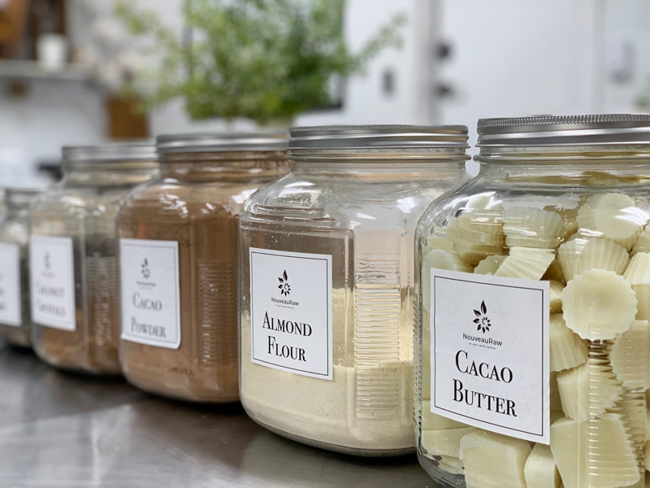
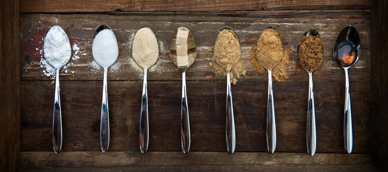

Ingredient Staples for the Pantry (+PDF)
I have put together a brief list of staples for your pantry that can be quite useful to have on hand. You don’t need to start with or even stock all of them, but hopefully, this will give you some good ideas.
You may need to look in a few places, depending on what your town has to offer. Check out your local grocery store, health food store, co-op, and online. Price compare and look for the best quality that you can afford. A whole food diet plan is as simple as keeping on top of your kitchen stock so that there is always something to eat that is full of nutrition!

Read Labels
Truthfully, if you eat a completely whole food diet, 99% of the foods you eat won’t have labels. But that’s not always feasible. Most importantly, it is best to read labels. You want raw products when possible, not their cooked counterparts. Labeling can be vague or even deceptive, and unless you see the word “raw” or an equivalent such as “unpasteurized,” or “cold-pressed,” chances are it is not raw. And always get organic if you can.
Remember this isn’t a complete list, but it’s a good one to get you started. Your pantry will grow and evolve to what best suits the needs of you and your family.
Printable PDF Shopping List
I sat down and created a downright detailed shopping list for you. Whereas it may not have everything listed (due to your demographics, family needs, etc.), it should help you keep your kitchen well-stocked. Click (NouveauRaw – Shopping List) to download the PDF. It is four pages long but the last page has a note section so you can add any additional items you may need.
Do the best you can. A healthier life is a journey, not a destination.
- Cacao Nibs or Powder – Used for shakes and making ‘raw chocolate candy.’ It is incredibly high in antioxidants and magnesium. Superfood!
- Cacao Butter – A great ingredient to use in raw food desserts.
- Carob Powder – From the carob tree, has a slightly sweet taste and often used as a chocolate substitute.
- Coconut Butter – Different than coconut oil, and is often used in raw desserts as a thickener. You can create milk from it, or eat it straight from the spoon.
- Nut/seed butters – You can also make these yourself and are great to add to recipes as a thickener or flavor enhancer.
- Almond Butter – This is a must-have in our kitchen for whipping up fast almond milk, dip apples in, use in dessert recipes, etc.
- Tahini – This is another necessity for creating a speedy Asian flavored dressing.
- Cashew Butter – You can eat by the spoonful, use in dessert recipes, and so many other possibilities.
- Raw nuts and seeds – Store in mason jars in the fridge or freezer to extend shelf life. Be sure to educate yourself on the soaking requirements for these.
- Hemp Seeds – A great vegetarian protein source with perfect omega 3:6 ratio. They go great in smoothies, cookies, and bar recipes.
- Chia Seeds – Great to use as a natural thickener, and to bump up your nutrients in recipes! Use in smoothies, desserts, crackers, etc.
- Flax Seeds – Great to use as a natural thickener, another one to bump up your nutrients in recipes! Use in smoothies, desserts, crackers, etc.
- Flours – Almond, buckwheat, coconut, oat, and tiger nut flours are some of the most popular.
- Sprouting Seeds – Grow your own sprouts! Use in salads, for juicing, and in wraps.
- Dried fruit – Make sure they are sulfur and preservative-free and organic if possible. Keep stored in mason jars in the fridge to extend shelf life.
- Dried herbs and spices – Keep in airtight containers. It is suggested to replace after about six months to ensure freshness.
- Cold-pressed olive, hemp, flax, and coconut oils – Be sure to purchase cold-pressed and store in the fridge (if recommended).

- Sweeteners – Some great options are honey, dried fruit (dates, raisins, etc.), carob powder, lucuma powder, stevia (not raw).
- Superfoods – Algae, maca, sea vegetables, sun-dried tomatoes, bee pollen. All contain essential amino acids and are rich in enzymes.
- Raw grains – Buckwheat groats, oat groats, quinoa, millet, amaranth, wild rice, etc. Store in mason jars to keep free of bugs.
- Nutritional Yeast – Use in cheese recipes, sprinkle on salads.
- Braggs Aminos, Coconut Aminos, Tamari, Nama Shoyu – Your choice. Used in dressings, spritz on salads, used in many recipes.
- Raw Apple Cider Vinegar – Used in salad dressings, spritz your salads with it, use in cheese recipes, etc.
- Irish moss – A natural thickener.
© AmieSue.com